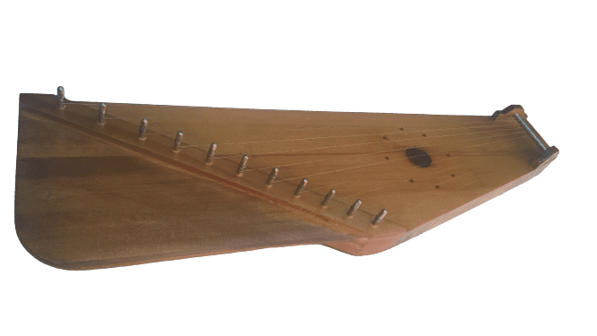

Гусли- древний по происхождению струнный музыкальный инструмент, который с
древних времен славился своим чарующим звучанием. При игре обычно
инструмент находится на коленях, щипковым методом двух рук извлекаются
звуки, либо только правой рукой, а левой приглушает струны, также играют
на гуслях и бряцанием. Чтобы звук был более звонким при игре используют
медиатор. Простые песни или импровизационные композиции достаточно
несложно создать на гуслях не имея опыта, за счет простого подбора
мелодичности звучания струн, поскольку за какую струну не возьмись всё
звучит красиво и гармонично. Гусли считают старейшим типом и прародителем
других струнных инструментов, прообразом являлась, очевидно, простая доска
с натянутыми над ней струнами, так как в былинах встречается название
«гусельная досочка». Щипковые инструменты гусельного типа имеют более чем
тысячелетнюю историю, которая скрыла от нас их точный возраст и место их
рождения. Гусли изначально были не только музыкальным инструментом, с их
помощью люди передавали свои мысли, чувства, познания. В процессе развития
гусли претерпели ряд изменений, а так же появились различные их
разновидности, могут отличаться по форме и разному количеству струн. У
других народов свои названия инструмента: литовский «канклес»,
карело-финский «кантеле», эстонский «каннель», чувашский «кесле»,
марийский «кюсле». Гусли крыловидные состоят из плоского продолговатого
долбленого или сборного корпуса, нижней деки и верхней деки с
резонаторными отверстиями, колков для натяжения струн, струнодержателя,
вдоль лицевой деки веерообразно натянуты струны. Название дано по
открылку, который выступает за ряд колков в виде крыла. Для изготовления
может применяться древесина хвойных и лиственных пород, таких как: ель,
сосна, клен, дуб, кедр, ольха и др. Строй диатонический, обычно мажорного
лада. В основном для изготовления гуслей существуют только небольшие
мастерские, которые создаются истинными любителями старины. Гусли,
пожалуй, один из самых интересных народных инструментов. И если вы
думаете, что их жизнь ушла в прошлое, то это совсем не так, все больше
людей узнают и проявляют интерес к этому инструменту.
Купить гусли можно ЗДЕСЬ